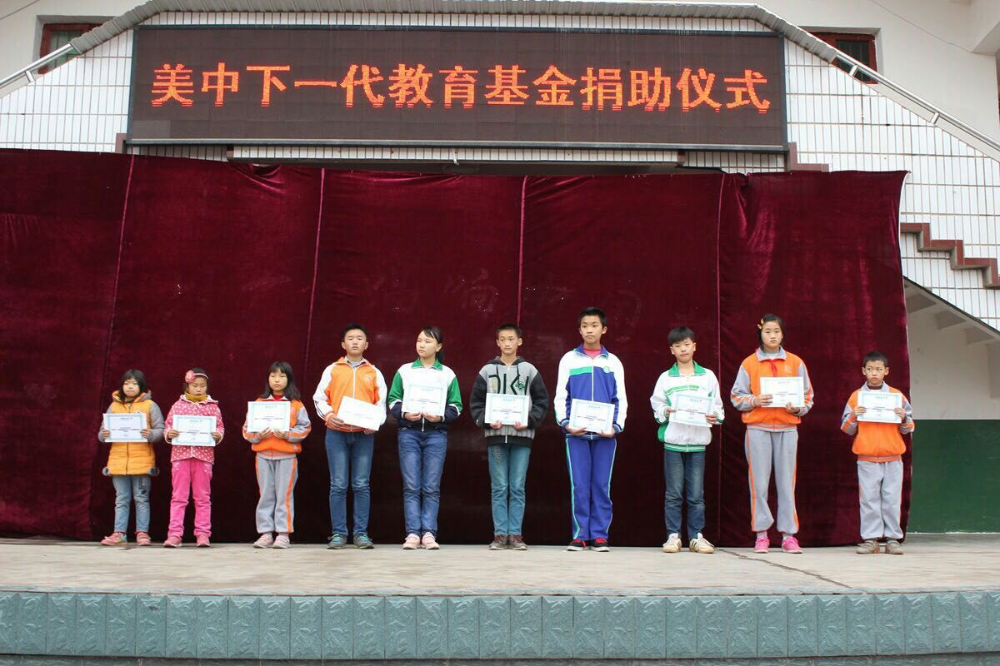

助学之路漫漫 - 四川西充助学项目汇报
李肇仁
2015年12月13日
2015年11月27日下午，重庆市赵树铭博士和我等一行七人代表美中下一代教育基金会和广大志愿者们来到四川省西充县为获得美中下一代教育基金会奖学金的同学们颁发助学金、奖状。
在受理这批贫困学生申请过程中，重庆市的西南医科大学的赵树铭博士，许冉女士等志愿者配合美中下一代教育基金会做了大量的工作。因为这批学生分别来自四川省西充县7个不同乡镇小学，赵树铭博士，许冉女士不辞辛苦，亲往西充县各相关学校与相关老师询问核实学生情况，并与申请人逐一交谈了解情况。颁奖当天，赵树铭博士、周红女士、董必全先生、李勇先生、黄晶女士，和许冉女士六位志愿专程从重庆赶往西充，为每个获奖孩子送来书包文具等奖品。感谢这些志愿者朋友的参与和帮助，为美中下一代教育基金会架起一条传递广大志愿者爱心给这些需要帮助的孩子的通道。
2009年与一批好友共同发起组建美中下一代教育基金会以来，这是我第一次亲临现场向获奖学生发放奖学金。对于这次颁奖活动，当地政府十分重视，举办颁奖仪式的学校还专门为这次活动进行了精心的场地布置，颁奖过程中有众多的学生家长和学校周边的居民过来围观。感谢为这次活动辛苦准备的有关部门和学校领导。尊重知识，尊重教育，关爱无助的孩子，弘扬助人为乐的社会风气，需要全社会的参与。我们可喜地看到中国这些年对于教育投入力度的不断加大，学校校舍设施近年来得到不断的改善，教师的社会和经济地位也有较大提高。今日中国经济发展水平和政府对教育的支持力度总体而言已经可以为基础教育提供较好的环境和设施保证。所以通过这次现场参与和感受，我相信中国的助学事业发展应该进入更加精准定位和全民参与阶段。坚持和传播美中下一代教育基金会的助学理念，意义深远。
这次活动非常遗憾的是没有机会与孩子们座谈交流。为参加这次活动，10个孩子耽误了一个下午的学习，从各自就读的学校赶来。活动结束后孩子们便要急忙赶回各自的学校。耽误了孩子们的学习时间，我心里感到颇有些不安。颁奖过程中孩子们表情淡定而平和，也许是超乎想象的生活坎坷磨难过早地雕磨掉他们的天真和童稚。这些看似普普通通的孩子们，或父母身患重病、或丧失父母、或父母离异单亲、或被父母抛弃。我好倾听他们的心声，体味他们在困苦生活经历中心灵感受和期待，也好向广大志愿者们汇报，向社会呼吁，我们应该如何更好地呵护这些稚嫩脆弱的幼苗。希望以后有机会闲下来，可以下来多走走，走近这类孩子，走进他们的心里。这样的孩子很多很多，他们需要社会关注和关爱！
西方的民间慈善机制高度发达。中国的民间慈善才刚刚起步。唤醒社会良知，关心弱势群体是促进社会进步的有益事业。美中下一代教育基金会全体董事均为志愿者。基金会的募捐、贫困孩子申请受理、调研、和资金发放所有环节均由基金会组织，由资源自愿无偿参与、费用自理。募捐款项透明管理，奖学金发放不通过任何第三方，一分不少地直接发放到孩子手上。基金会创办6年来，经过众多爱心人士的支持和坚持不懈，先后资助了包括四川、青海、天津、云南、河南、广西、贵州、江苏、黑龙江九个省市和台湾地区的192个孩子。我们希望有更多的朋友能够加入到我们的行列。共同助家境贫困而品学兼优的孩子们圆一个读书梦。
|  |